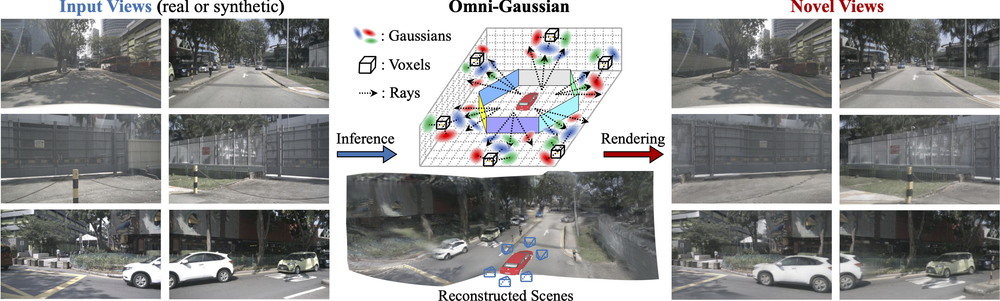

Prior works employing pixel-based Gaussian representation have demonstrated efficacy in feed-forward sparse-view reconstruction. However, such representation
necessitates cross-view overlap for accurate depth estimation, and is challenged by object occlusions and frustum truncations. As a result, these methods require
scene-centric data acquisition to maintain cross-view overlap and complete scene visibility to circumvent occlusions and truncations, which limits their applicability
to scene-centric reconstruction. In contrast, in autonomous driving scenarios, a more practical paradigm is ego-centric reconstruction, which is characterized by
minimal cross-view overlap and frequent occlusions and truncations. The limitations of pixel-based representation thus hinder the utility of prior works in this task.
In light of this, this paper conducts an in-depth analysis of different representations, and introduces Omni-Gaussian representation with tailored network design to
complement their strengths and mitigate their drawbacks. Experiments show that our method significantly surpasses state-of-the-art methods, pixelSplat and MVSplat,
in ego-centric reconstruction, and achieves comparable performance to prior works in scene-centric reconstruction. Furthermore, we extend our method with diffusion
models, pioneering feed-forward multi-modal generation of 3D driving scenes.
1. Exploring reconstructed 3D scenes (normal conditions).
2. Exploring reconstructed 3D scenes (extreme conditions like bad weather or low light).
Exploring generated 3D scenes conditioned on texts, BEV maps and 3D boxes.
Figure. Overview. (a) Obtain images `I^i(i=1~K)` from surrounding cameras with minimal overlap (e.g., adjacent image areas enclosed by green rectangles) in a single frame, and extract 2D features `F^i(i=1~K)` using image backbone. (b) For Volume Builder, we first use Triplane Transformer to lift 2D features to 3D volume space compressed by three orthogonal planes, where we employ cross-image and cross-plane deformable attentions to enhance feature encoding. Then, Volume Decoder takes voxels as anchors, and predict nearby Gaussians `\mathcal{G}_V` for each voxel given features sampled from the three planes through bilinear interpolation. (c) For Pixel Decorator, we use Multi-View U-Net to propagate information across views and extract multiple 2D features for Pixel Decoder to predict pixel-based Gaussians `\mathcal{G}_P` along rays. Through Volume-Pixel Collaborations including Projection-Based Feature Fusion and Depth-Guided Training Decomposition, we can make `\mathcal{G}_V` and `\mathcal{G}_P` complement for each other, and obtain the full Omni-Gaussians `\mathcal{G}` for novel-view rendering.
@article{wei2024omniscene,
title={Omni-Scene: Omni-Gaussian Representation for Ego-Centric Sparse-View Scene Reconstruction},
author={Wei, Dongxu and Li, Zhiqi and Liu, Peidong},
journal={arXiv preprint arXiv:xx.xx},
year={2024}
}